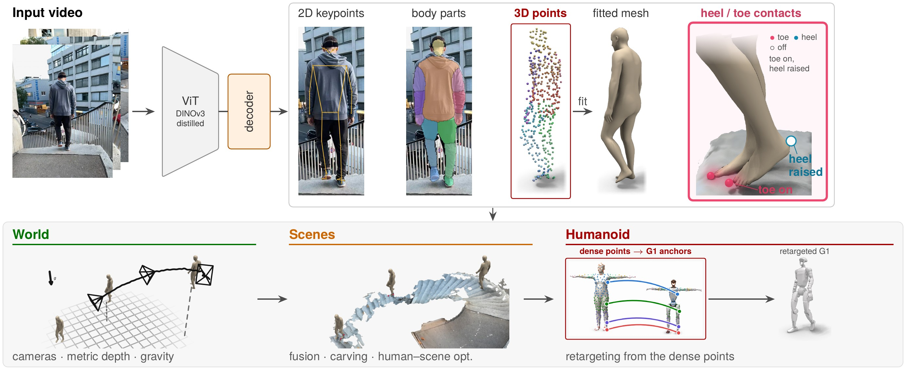

FAB: Fast and Accurate Body Estimation
in Pixels, World Space and Scenes
Abstract
We present FAB (Fast and Accurate Body estimation), a human body estimator that achieves leading inference efficiency and body recovery faithfulness at the same time. As a 3D human pose estimator, FAB’s core is to predict human skeleton joints and surface dense points directly, rather than only parametric mesh model parameters. In pixels, FAB predicts dense 2D and 3D body points directly, alongside a parametric (MHR) head, and fits SMPL to them in one learned pass and two Gauss–Newton steps. Its ViT-L student FAB-L, distilled from a fine-tuned SAM 3D Body, runs in real time for one person on one RTX 4070 Ti SUPER, from person detection to a fitted body, 4.6× faster than SAM 3D Body’s body-only path in eager PyTorch, and is more accurate than SAM 3D Body on most camera-space benchmarks. The same network predicts heel, toe, hand, and knee contacts, which tie the body to the scene. In world space, FAB-L is more accurate than many recent methods. In scenes, FAB fuses the static scene’s depth around the visible person and aligns the scene and body through the predicted contacts. FAB also brings convenience for the robotics task of human-to-humanoid real-to-sim motion transfer. An in-model G1 head and FAB-Retarget, a motion-level retargeter that reads the dense points (or the mesh fitted to them), map the motion to a Unitree G1. FAB-Retarget’s references follow the person more closely than those of the specialized retargeters (SOMA, GMR, UMR, OmniRetarget) and much more closely than Fast SAM 3D Body’s body retargeted by our sequence IK.
Method

Images / Videos
Every output, every frame
FAB-L on every frame on its own (per-frame image model, no temporal smoothing), with the ground-truth box, on one crop around the person: 2D keypoints with heel / toe contacts (red: planted), body parts, the SMPL body fitted to the points and the dense 3D points (the side facing the camera). One re-run of the paper’s FAB-L on EMDB (per-clip MPJPE within 0.07 mm of the paper’s). Bystander faces blurred.
Video and world
FAB-L’s world reconstruction from one moving camera: the scene fused from the video and coloured from its frames, the body in blue while it is in the image and grey when it is not, foot contacts from the video contact model as red dots, and the camera with its path. Top left: the input (bystanders blurred).
Picked by our WA-MPJPE gain over GVHMR on the 25 EMDB-2 sequences: the single-method clips are P3_28 (8th of 25) and P9_79 (19th), the nearest passes to one third and two thirds; the 6 smallest gains (1st–6th, including the two where GVHMR is better) and the 6 largest (20th–25th) failed our scene check (planted feet within ±5 cm of the reconstructed scene) in their 8 s windows. Comparisons below: P3_29 (14th of 25), P3_27 (6th), the RICH-191 clip nearest the median gain, and P9_79 (19th). On EgoBody the floor under the feet is only partly reconstructed, and the planted feet sit about 7 cm above the floor around them.
Ours | DuoMo | GVHMR
human visible not in image foot contact · Left: ours, then the baselines (released code). A body is blue while at least half of the ground-truth body’s joints are in the image and grey otherwise, by the same rule for every method.
Scenes
FAB fuses the static scene’s depth around the visible person and aligns scene and body through the predicted contacts. On the same videos as VideoMimic’s released real2sim pipeline, our scene is more accurate per frame on RICH, and, placed by the ground-truth camera, our body lies closer to the scanned contact surfaces. All four methods ran on the same video, with no tuning on this clip.
Humanoid
Each retargeter’s Unitree G1 reference, from the same world body, tracked by the same released tracker (SONIC, G1 mode) in one MuJoCo setup. Ours, points / mesh: FAB-Retarget in points / mesh mode, on the dense points and the SMPL fitted to them / on the fitted SMPL alone. GMR: input turned to face the robot’s initial heading at frame 0. Silver: the tracked G1; blue: the method’s kinematic reference, drawn at the robot’s position. bone err is the running mean of the G1’s bone-direction error against the real person up to its first fall; root lag is the current horizontal distance between the robot’s root and its reference root; the red badge marks a fall. Left: the input with FAB-L’s dense points and the mesh fitted to them, and the video contact model’s feet on the ground.
Clips picked by rule: the largest, median and smallest gain of Ours, mesh over Fast SAM 3D Body (SONIC-G1 bone-direction error) over the 12 trackable test clips; all three are EMDB clips. More EMDB clips in the other tabs.
From one video to a humanoid: in-the-wild Pexels clips, selected examples.
Many people, one world
Group dances from stock video: every dancer through FAB, all of them in one metric world with the scene, each retargeted to a Unitree G1 and tracked in simulation. Selected examples; robots are retargeted from the fitted bodies and tracked independently, trackers are named in each video (cheerleaders: SuperMimic, one tracker trained per dancer, in a world levelled by one rotation); bystander faces blurred.
Ego + exo: body and hands in one world
One person seen by two cameras: FAB on a third-person camera, FAH-L on the camera the person wears on the head, synchronised through the head camera’s timecode, in one world. Hands come from our companion model FAH (project page, code). Robots are FAB-Retarget references (kinematic); hands are shown in the head-mounted view only; floors are not levelled; bystander faces blurred.
Key numbers
From the paper’s tables, cell by cell; our rows shaded, bold: best.
Camera space
| 3DPW | RICH | ||||
|---|---|---|---|---|---|
| Method | PA | MPJPE | PA | MPJPE | fps |
| TRAM | 36.4† | 58.8 | 40.0 | 68.7 | 1.0 |
| GVHMR | 38.4◊† | 58.2◊ | 38.0 | 66.6 | 9.2 |
| GEM-X (GENMO) | 37.6 | 59.8 | 35.3 | 56.4 | 2.0 |
| WHAM | 38.3† | 63.8 | 42.2 | 77.9 | 2.8 |
| DuoMo | 36.7† | 59.4 | 35.0 | 49.5 | 1.1‖ |
| SAM 3D Body | 33.7† | 55.1 | 31.3 | 50.0 | 8.5‡ |
| Fast SAM 3D Body | 34.1† | 55.5 | 31.4 | 49.8 | 6.7 |
| NLF-L | 35.7† | 57.7 | 28.1† | 45.3 | 10.8 |
| PromptHMR | 37.1† | 59.1 | 37.1 | 54.5 | 7.9 |
| FAB-H, MHR mesh → SMPL, official | 32.4† | 52.7 | 27.9† | 46.0 | 0.12 |
| FAB-H, MHR mesh → SMPL, our fit | 33.1† | 53.2 | 28.2† | 45.6 | 24.9 |
| FAB-H, dense points → SMPL | 33.7† | 54.8 | 29.8† | 48.2 | 21.8 |
| FAB-L (ours) | 32.7† | 53.1 | 27.8† | 45.5 | 39.2 |
| FAB-S (ours) | 37.7† | 59.8 | 35.4† | 56.4 | 63.8 |
Camera space, re-run by us under the standard protocol on the same frames (mm; PA: PA-MPJPE; 3DPW: 14 H36M joints; RICH test: 24 SMPL joints). FAB-L / FAB-S: SMPL fitted to their dense points; FAB-H is also reported with its MHR mesh converted to SMPL, by our fit and by MHR’s official converter (official). Bold: best per column; shaded: ours (also in the other tables). fps: end to end on one RTX 4070 Ti SUPER. †Trains on this benchmark’s training split (NLF-L on RICH: split unstated). ◊Flip test-time augmentation. ‡Body-only mode, eager PyTorch. ‖Exceeds the card’s 16 GiB.
World space
| EMDB-2 (25 sequences) | RICH-191 | ||||||||||
|---|---|---|---|---|---|---|---|---|---|---|---|
| Method | Box | Cam. | WA | W | RTE | J | FS | Cam. | WA | W | RTE |
| TRAM | GT | GT K, SLAM | 93.3 | 328.3 | 3.20 | 18.6 | 13.9 | GT K, static | 95.9 | 154.5 | 2.24 |
| GVHMR | GT | est. K, DPVO | 109.1 | 272.8 | 1.90 | 16.1 | 3.4 | GT K, static | 77.1 | 125.1 | 2.34 |
| GEM-X (GENMO) | GT | GT K, GT R | 114.2 | 270.9 | 2.54 | 35.3 | 4.3 | GT K, GT R | 79.3 | 128.5 | 2.58 |
| WHAM | GT* | FOV, GT R | 148.8 | 384.5 | 4.63 | 22.0 | 5.9 | FOV, static | 117.5 | 201.9 | 5.06 |
| DuoMo | GT | GT K, TRAM SLAM | 67.5 | 167.9 | 1.19 | 9.5 | 3.9 | GT K, static | 55.6 | 83.4 | 1.70 |
| CRISP§ (human–scene) | own | MegaSaM | 74.7 | 208.7 | 1.46 | 53.6 | 12.4 | MegaSaM | 91.7 | 158.1 | 3.37 |
| SAM 3D Body | 56.0 | 141.0 | 1.06 | 5.2 | 6.3 | 73.9 | 144.0 | 5.67 | |||
| Fast SAM 3D Body | 56.3 | 141.1 | 1.06 | 5.3 | 6.4 | 74.4 | 145.4 | 5.70 | |||
| NLF-L | 60.4 | 151.8 | 1.14 | 5.7 | 6.9 | 69.7† | 137.2 | 5.72 | |||
| FAB-H, MHR mesh → SMPL | 55.4 | 142.5 | 1.09 | 5.2 | 6.2 | 68.8† | 135.5 | 5.75 | |||
| FAB-H, dense points → SMPL | 59.0 | 147.3 | 1.04 | 5.5 | 7.7 | 75.6† | 150.2 | 6.01 | |||
| FAB-L (ours) | 57.1 | 147.2 | 1.06 | 5.3 | 6.8 | 65.9† | 132.2 | 5.73 | |||
| FAB-S (ours) | 61.9 | 163.8 | 1.13 | 5.8 | 8.6 | 80.1† | 155.2 | 5.93 | |||
| FAB-L: ViPE camera at its own scale, smoothed | ours | ViPE scale | 60.9 | 170.4 | 1.55 | 4.7 | 7.6 | ours | 65.9† | 132.2 | 5.73 |
| FAB-L, ground-truth camera motion | ours | ours K, GT motion | 51.0 | 137.9 | 0.19 | 4.0 | 6.8 | ours K, GT motion | 65.9† | 132.5 | 5.73 |
| FAB-L (ours), ground-truth boxes | GT | ours | 55.7 | 143.0 | 1.03 | 5.1 | 6.2 | ours | 50.6† | 77.4 | 1.16 |
World space on the same frames: EMDB-2 (all 25 sequences) and RICH-191. Top: world methods with their released code and own inputs. Middle: per-frame bodies through our world pipeline, with the same cameras, boxes and contacts. Bottom: before the joint human–scene step, and with the ground-truth camera motion; last row: FAB-L with the ground-truth boxes. WA / W: WA- / W-MPJPE (mm); RTE (%); jerk J (10 m s-3); foot sliding FS (mm). Box: GT, ours (our detector) or own (its masks). Cam.: intrinsics K (FOV: fixed field of view) and camera motion (own SLAM / DPVO / MegaSaM, GT rotation R, or static); ours: our focal rule and ViPE. Bold: best in the top and middle blocks and the last row. *RICH-191: box from WHAM’s ViTPose keypoints in the GT box. §Overlapping 600-frame chunks. †Trains on RICH’s training split (NLF-L: split unstated).
Foot contact
| static | mat | HSC | ||
|---|---|---|---|---|
| Method | EMDB-2 | RICH | MOYO | RICH |
| keypoint height / speed rule | 0.46 | 0.62 | 0.55 | 0.65 |
| WHAM (released code) | 0.63 | 0.87 | 0.66 | 0.91 |
| GVHMR (released code) | 0.71 | 0.89 | 0.61 | 0.90 |
| ours, image head | 0.67 | 0.88 | 0.89 | 0.97 |
| ours, causal video model (world frame) | 0.69 | 0.89 | 0.87 | 0.97 |
Foot contact F1 against three label sets. Static: world-fixed contact from the ground-truth world motion; mat: MOYO’s measured pressure mat; HSC: any contact against RICH’s human–scene contact annotations; all on validation splits, which share subjects with training. WHAM and GVHMR output only static contact, scored against every label set.
Scenes
| scene geometry | human in the scene’s world | human–scene contact | ||||||||||||||||||
|---|---|---|---|---|---|---|---|---|---|---|---|---|---|---|---|---|---|---|---|---|
| RICH-3 | EgoBody | SLOPER4D | PROX | SLOPER4D | EMDB P3_30 | RICH-3¶ | VideoMimic (123), G1 | |||||||||||||
| Method | rigid | Sim(3) | rigid | Sim(3) | ATE | scene | 1-way | 2-way | non-pen.↑ | WA | W | RTE | WA | W | pen. | float | |s| | feet | pen. >2 cm | gap |
| VideoMimic | 18.4 | 11.7 | 10.9 | 7.6 | 3.0 | 49.8 | 24.6 | 31.0 | 84.8 | 35.7 | 73.8 | 11.4 | 10.8 | 36.5 | 10.2 | 13.6 | 23.8 | 4.3 | 57.2 | 5.0 |
| CRISP | 8.1 | 6.9 | 7.6 | 6.1 | 2.4 | 75.8§ | 18.6 | 27.3 | 76.0 | 18.1§ | 67.2§ | 3.6§ | 6.4§ | 14.9§ | 7.5 | 11.6 | 19.2 | 6.5 | 0.8‡ | 1.9‡ |
| JOSH | 25.3 | 15.2 | 22.2 | 6.9 | 9.9 | 264.6 | 74.5 | 44.2 | 87.3 | 22.2 | 77.7 | 4.6 | 40.8 | 83.2 | 4.9 | 4.1 | 9.0 | 35.4 | 0.7‡ | 2.6‡ |
| FAB-L (ours)† | 8.0 | 7.5 | 12.5 | 9.4 | 2.2 | 94.4 | 21.3 | 17.8 | 92.0 | 10.6 | 40.8 | 1.1 | 5.9 | 14.3 | 3.5 | 5.4 | 8.9 | 4.8** | 0.6 | 2.5 |
Scenes against three released pipelines, run by us on the same videos, under VideoMimic’s protocols where it has them; one measure per column, grouped by dataset. Units: cm, except non-pen., RTE and pen. >2 cm (%); lower is better except non-pen. §Overlapping 600-frame chunks. **After the joint human–scene step (10.5 before it). ¶pen. / float / |s|: camera-frame bodies placed in the scan by the ground-truth camera. †Trains on RICH’s and EgoBody’s training splits. ‡CRISP / JOSH: bodies and scenes through FAB-Retarget’s mesh mode, as ours; JOSH, which outputs no gravity, uses ours.
Humanoid
| reference | tracked | ||
|---|---|---|---|
| Reference | bone | slip | falls, bone |
| SOMA | 15.5 | 0.28 | 5, 23.4 |
| GMR | 14.7 | 0.26 | 5, 19.6 |
| UMR | 18.2 | 0.39 | 5, 24.9 |
| OmniRetarget | 21.7 | 0.31 | 8, 27.4 |
| sequence IK | 24.3 | 0.22 | 6, 25.8 |
| Fast SAM 3D Body | 25.5 | 0.39 | 6, 27.6 |
| FAB-L G1 head (per frame) | 14.5 | 0.38 | 5, 20.4 |
| FAB-Retarget [skeleton] | 11.7 | 0.12 | 5, 19.2 |
| FAB-Retarget [skeleton + mesh] | 11.6 | 0.11 | 6, 20.0 |
| FAB-Retarget [skeleton + mesh + points] | 11.8 | 0.13 | 4, 18.3 |
G1 references on 25 flat-floor test clips, tracked by SONIC (G1 mode) in one MuJoCo setup, all from the world pipeline’s body. Reference: bone-direction error (°) and sole slip (m s-1); tracked: falls of 25, bone-direction error before the first fall. FAB-L G1 head (per frame): the in-model G1 head; FAB-Retarget [skeleton] / [skeleton + mesh] / [skeleton + mesh + points]: its skeleton / mesh / points mode, pinned in one batch; Fast SAM 3D Body: its own SMPL through our sequence IK.
BibTeX
@misc{fab2026,
title = {Fast and Accurate Body Estimation in Pixels, World Space and Scenes},
author = {Cao, Jinkun},
year = {2026},
eprint = {2611.25801},
archivePrefix = {arXiv},
primaryClass = {cs.CV},
url = {https://arxiv.org/abs/2611.25801}
}
Credits
- EMDB (Kaufmann et al., ICCV 2023): frames and ground truth of the method figure and of the camera-space, world, scene and humanoid videos, used under its licence for non-commercial research. Bystander faces blurred.
- RICH (Huang et al., CVPR 2022): frames and scans of the world comparisons, used under its licence for non-commercial research. Bystander faces blurred.
- EgoBody (Zhang et al., ECCV 2022): frames of the egocentric world clip, used under its licence for non-commercial research.
- Body models: SMPL (Loper et al., 2015) and MHR. Baselines: SAM 3D Body, Fast SAM 3D Body, GVHMR, DuoMo, VideoMimic, CRISP, JOSH, GMR, UMR, OmniRetarget and SOMA, each run by us with its released code and models; the world comparisons show the same baseline runs as the paper’s world-space numbers.
- Dances, Pexels clips under the Pexels License: “Cheerleaders performing” by MART PRODUCTION; Pexels video 8688883 by ANTONI SHKRABA production; “Woman dancing in the street” by RDNE Stock project (humanoid); “Woman dancing on the street” by RDNE Stock project (humanoid); “Person dancing on street” by RDNE Stock project (humanoid). Overlays and renders added by us.
- Ego + exo: CORE4D-Real (Liu et al., CVPR 2025), CC BY 4.0; participants’ faces blurred by CORE4D, other heads blurred by us. Overlays and renders added by us; each clip is under its dataset’s licence.
- Unitree G1: the robot model is Unitree Robotics’ G1 description (unitree_ros, BSD 3-Clause). Tracking in simulation: SONIC (G1 mode), its released policy, in MuJoCo.
- Teaser, Pexels clips under the Pexels License: “People dancing at a skate park” by Antoni Shkraba; “Woman dancing on the street”, “Woman dancing in the street” and “Person dancing on street” by RDNE Stock project; “Cheerleaders performing” by MART PRODUCTION; “Man breakdancing at the court” by Marc Espejo; “Businessman in full suit walking up the stairs” by Lara Jameson. Photos (Wikimedia Commons, CC BY 2.0): “Two women jogging in Skinner Butte Park” by Rick Obst; “Skateboarder on the South Bank” by Ashley Van Haeften. Egocentric hands: HoloAssist (Wang et al., ICCV 2023; CDLA-Permissive-2.0) and Egocentric-10K (Build AI, 2025; Apache-2.0). EMDB frames as above. Overlays added by us; each clip is under its source’s licence. Type: Inter (SIL Open Font License 1.1).
- Built with DINOv3.